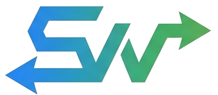
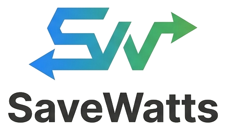
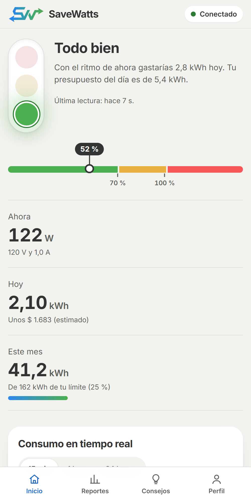
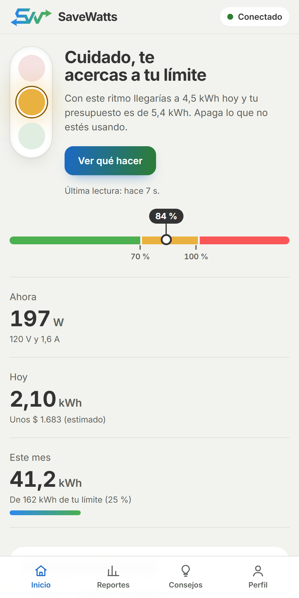
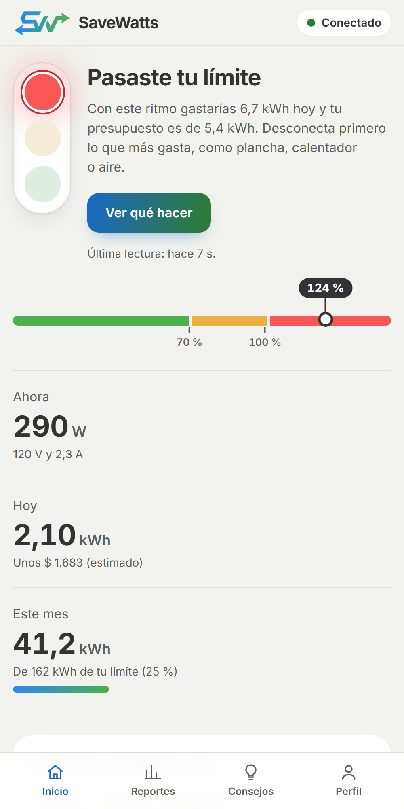

El color lo calcula el servidor
Con reglas fijas y matemáticas simples. Si la IA fallara, el semáforo seguiría funcionando igual.

SaveWatts Abrir la app (se abre en una pestaña nueva)
Un equipo en la caja de breakers mide cuánta electricidad gasta tu casa y una app te avisa antes de pasarte del límite, no cuando llega la factura.
Tip para presentar: usa las teclas ← → para cambiar de pantalla y F para pantalla completa.

El problema
Te enteras de cuánto gastaste un mes después, cuando ya no hay nada que hacer.
La factura es un solo número. No dice a qué hora ni por qué se disparó el consumo.
Sin datos del momento, apagar luces por costumbre no sirve de mucho.
SaveWatts convierte el consumo en algo que se ve mientras ocurre.
La idea


Cómo funciona
Un sensor PZEM-004T mide voltaje, corriente y potencia en la caja de breakers.
Un Arduino UNO R4 WiFi manda las lecturas por internet cada 5 a 10 segundos, con una clave secreta.
El servidor guarda los datos y calcula el color con reglas fijas.
La app muestra el semáforo, la gráfica y consejos, y se instala en el celular como cualquier app.
El primer paso y el segundo son el hardware. Los pasos 3 y 4 ya están construidos y funcionando en internet.
Pruébalo tú
Una casa que el mes pasado gastó 300 kWh y quiere ahorrar 10 %:
Mueve la barra. Cada casa tiene su límite; este es solo un ejemplo.
Estás lejos de tu límite.
Ritmo diario 4,3 kWh
Del presupuesto 48 %
potencia × 24 h ÷ presupuesto diario. Verde bajo 70 %, amarillo de 70 a 100 %, rojo sobre 100 %.
Confianza
Con reglas fijas y matemáticas simples. Si la IA fallara, el semáforo seguiría funcionando igual.
Escribe 2 o 3 recomendaciones para el estado que ya se calculó. Si falla, se muestran consejos base.
A la IA solo le llegan números, nunca nombre ni correo. Las contraseñas se guardan cifradas.
Puedes cambiar la contraseña, recuperarla por correo o eliminar la cuenta y todo tu consumo guardado.
Dónde estamos
Mientras el equipo se construye, un simulador envía lecturas al servidor exactamente como lo hará el hardware. Es lo que verás a continuación.
Abre la app con la cuenta de pruebas. El simulador hará que el semáforo pase de verde a amarillo y a rojo.
savewatts.onrender.com (se abre en una pestaña nueva)
Gracias por su atención.